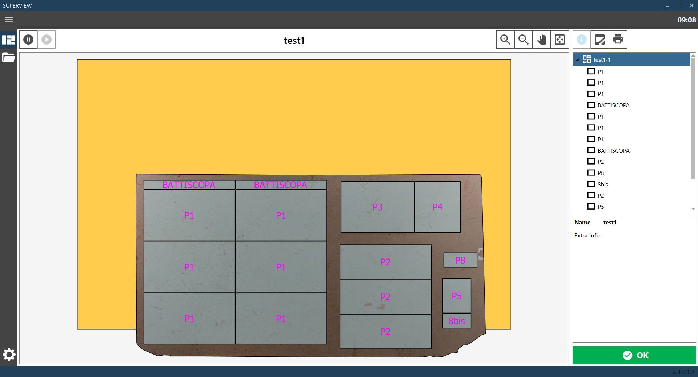

Page that allows viewing the current cutting configuration present in the unloading area.

There is a viewing window where it is possible to view the bench with the slabs executed along with the respective pieces. To the right there is a list of slabs and displayed pieces, and below a panel with the information of the selected object. It is possible to select a slab or a piece by clicking directly on the desired object in the viewing window, or on the object's name in the list to the right.
Increase zoom Increase the zoom of the unloading configuration viewing window.
Reduce zoom Decrease the zoom of the unloading configuration viewing window.
Drag mode Enable drag mode on the unloading configuration viewing window.
Reset default view Reset the default view on the unloading configuration display window.
Stop reception Stop receiving new cutting configurations. Enabled only when reception is active.
Start reception Start receiving new cutting configurations. Enabled only when reception is not active.
Display information Select the 'View Information' function, which allows to display the unloading configuration and related information. To display information on individual pieces or the slab simply select them directly from the viewing window or from the list on the right. The information will be displayed in the bottom left panel. When this function is selected the icon is colored light blue.
Select broken pieces Select the 'Select broken pieces' function (cf chapter CURRENT CONFIGURATION - BROKEN PIECES ALERT). When this function is selected the icon is colored light blue. This button is present only if the broken pieces alert function is enabled.
Print labels Select the 'Print labels' function (see chapter CURRENT CONFIGURATION - PRINT LABELS). When this function is selected, the icon is colored light blue. This button is present only if the print labels function is enabled.
Confirm Confirm completion of the current configuration, enabling reception of the next configuration. It is possible to disable the display of this button so that the next configuration is always displayed when ready without any confirmation from the operator.